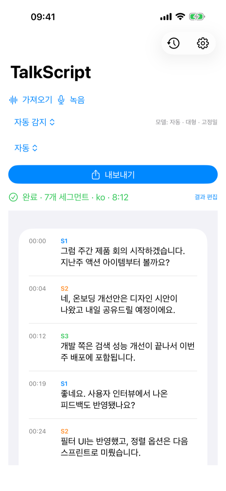
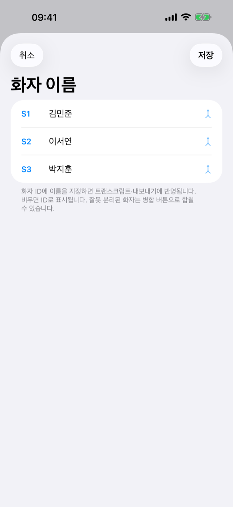
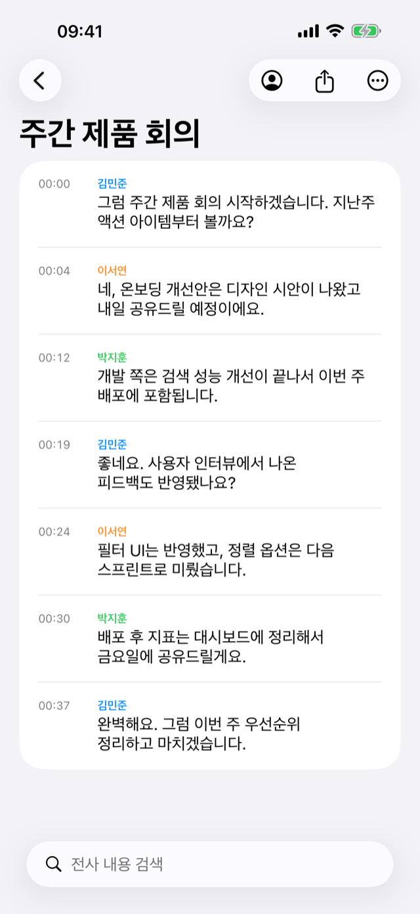
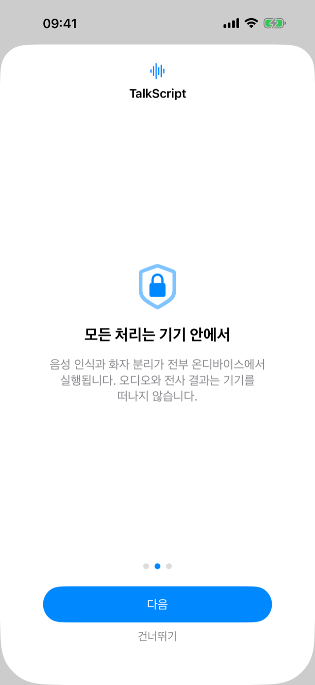

TalkScript는 회의·인터뷰·강의 녹음을 화자별로 구분된 텍스트로 바꿔 주는
iPhone·iPad·Mac 앱입니다. 음성 인식과 화자 분리가 전부 기기 위에서 동작해, 녹음 내용이 외부로 나가지 않습니다.TalkScript turns meeting, interview, and lecture recordings into
speaker-separated transcripts on iPhone, iPad, and Mac. Recognition and diarization
run entirely on your device — your audio never leaves it.
이럴 때 켜세요When you'd reach for it
받아쓰기에 쓰던 시간을, 결과를 다듬는 시간으로.Spend less time typing it up, more time using the result.
📋
회의가 끝나면 회의록이 남습니다Leave meetings with notes already written
회의를 녹음만 해두면 화자별로 정리된 텍스트가 만들어집니다. 받아쓰던 시간을 공유 한 번으로 줄이세요.Just record the meeting — get a transcript organized by speaker, ready to share in one tap.
🎙️
'누가 한 말'인지 헷갈리지 않게Never lose track of who said what
인터뷰·대담을 화자가 구분된 채로 전사합니다. 문장을 탭하면 그 대목부터 다시 들을 수 있어요.Interviews and panels are transcribed with speakers separated. Tap any line to replay that exact moment.
🎓
긴 강의도 텍스트로 다시Turn long lectures back into text
최대 3시간 녹음을 전사하고, 필요한 대목은 검색으로 바로 찾습니다. 다시 듣기 부담을 덜어줍니다.Transcribe up to 3 hours and search straight to the part you need — no re-listening to the whole thing.
🔒
민감한 대화는 기기 밖으로 나가지 않게Keep sensitive talks off the cloud
상담·진료·법률 같은 기록도 안심하고. 음성 인식과 화자 분리가 전부 기기 안에서 끝납니다.Counseling, medical, legal — recognition and diarization all finish on your device. Nothing is uploaded.
넣으면, 이렇게 정리됩니다Drop it in — here's what you get back
녹음·가져오기부터 내보내기까지 세 단계.Three steps, from recording to export.

1화자별로 자동 구분Speakers, split automatically
앱에서 녹음하거나 m4a·wav·mp3를 가져오면, 말한 사람이 S1·S2…로 나뉘어 전사됩니다.Record in-app or import m4a, wav, or mp3 — each voice is transcribed as S1, S2, and so on.

2이름 붙이고 정리Name them, tidy up
S1·S2를 실제 이름으로 바꾸고, 잘못 나뉜 화자는 하나로 합칠 수 있습니다.Rename S1, S2 to real names, and merge any speaker that got split by mistake.

3검색하고 내보내기Search and export
전사 내용을 검색해 원하는 대목을 찾고, TXT·Markdown·SRT·PDF로 내보내 공유합니다.Search the transcript to find a moment, then export as TXT, Markdown, SRT, or PDF to share.
왜 전부 기기 안에서일까요Why everything stays on your device
민감한 대화일수록, 어디서 처리되는지가 더 중요합니다.The more sensitive the conversation, the more it matters where it's processed.

오디오와 전사 결과가 기기 밖으로 전송되지 않습니다.Your audio and transcripts never leave your device.
계정도 로그인도 없이, 열면 바로 씁니다.No account, no sign-in — just open and go.
모델만 최초 한 번 내려받으면, 이후엔 비행기 모드에서도 전사됩니다.Models download once; after that it transcribes even in airplane mode.
기록은 내 기기에만 남고, 클라우드 비용도 없습니다.Recordings stay only on your device — and there's no cloud bill.
꼼꼼한 부분까지Down to the details
🌐 다국어 음성 인식Multilingual recognition
Whisper 기반 약 99개 언어. 기기 사양에 맞는 모델을 자동으로 선택합니다.Whisper-based, about 99 languages. The right model is picked for your device automatically.
👥 화자 수 지정·병합Speaker count & merge
자동 감지에 더해 화자 수를 직접 정하고, 잘못 나뉜 화자는 하나로 합칩니다.Beyond auto-detect: set the speaker count yourself and merge any that got split.
▶️ 싱크 재생·편집Synced playback & editing
문장을 탭하면 그 구간이 재생됩니다. 텍스트와 화자를 직접 고칠 수 있어요.Tap a sentence to play that moment. Edit the text and speakers yourself.
📊 화자별 발언 통계Speaker stats
누가 얼마나 말했는지 한눈에 봅니다.See who spoke how much, at a glance.
📤 4가지 포맷 내보내기Export in 4 formats
TXT·Markdown·SRT 자막·PDF로, 회의록부터 자막까지 바로.TXT, Markdown, SRT subtitles, and PDF — from meeting notes to captions.
🖥️ iPhone · iPad · MaciPhone, iPad & Mac
한 앱으로 어디서나. 스플릿 뷰로 기록과 결과를 나란히 봅니다.One app everywhere. Split view shows your history and result side by side.
긴 녹음도 안심하세요 — 처리가 중단돼도 마지막 진행 지점부터 자동으로 이어서 전사합니다.
발열과 저장 공간도 앱이 알아서 관리합니다.Long recordings are safe — if processing is interrupted, it resumes automatically from the
last checkpoint. Thermal and storage conditions are handled for you.
무료로 시작, 필요하면 ProStart free, go Pro when you need to
핵심 기능은 무료입니다. 더 길게, 광고 없이 쓰고 싶을 때만 Pro로.The core is free. Go Pro only when you want it longer and ad-free.
무료Free
핵심 기능 그대로All the core features
화자 분리 전사 · 편집 · 검색Speaker transcription, editing, search
TXT · Markdown · SRT · PDF 내보내기Export to TXT, Markdown, SRT, PDF
한 번에 20분까지 전사Up to 20 minutes per transcription
광고 포함Includes ads
Pro · 월 구독Pro · Monthly
더 길게, 광고 없이Longer, and ad-free
무료의 모든 기능 포함Everything in Free
한 번에 최대 3시간 전사Up to 3 hours per transcription
광고 제거No ads
길이 제한 해제Length limit lifted
자주 묻는 질문Frequently asked questions
인터넷 연결이 필요한가요?Do I need an internet connection?
전사와 화자 분리는 오프라인에서 동작합니다. 음성 인식 모델만 최초 한 번 내려받으면, 이후에는 비행기 모드에서도 전사할 수 있습니다.Transcription and diarization run offline. The speech model downloads once; after that you can transcribe even in airplane mode.
녹음이 서버로 전송되나요?Is my recording sent to a server?
아니요. 오디오와 전사 결과는 기기를 떠나지 않습니다. 별도 계정이나 로그인도 없습니다.No. Audio and transcripts never leave your device, and there's no account or sign-in.
어떤 파일을 가져올 수 있나요?What files can I import?
m4a·wav·mp3 오디오를 가져오거나 앱에서 바로 녹음할 수 있고, 한 번에 최대 3시간까지 처리합니다.Import m4a, wav, or mp3 — or record in-app — up to 3 hours at a time.
어떤 언어를 지원하나요?Which languages are supported?
Whisper 기반으로 한국어를 포함해 약 99개 언어를 인식하며, 기기 사양에 맞는 모델이 자동으로 선택됩니다.Whisper-based recognition covers about 99 languages including Korean, with the model auto-selected for your device.
화자 구분이 틀리면 고칠 수 있나요?Can I fix speaker mistakes?
네. 화자 수를 직접 지정하거나, 잘못 나뉜 화자를 병합하고, 각 화자에 이름을 붙일 수 있습니다.Yes. Set the speaker count yourself, merge speakers that were split by mistake, and name each one.
결과를 어떻게 내보내나요?How do I export the result?
TXT·Markdown·SRT 자막·PDF로 내보내 공유할 수 있습니다.Export and share as TXT, Markdown, SRT subtitles, or PDF.
무료로 어디까지 쓸 수 있나요?How far does the free version go?
무료로 한 번에 20분까지 전사할 수 있고, Pro 월 구독으로 길이 제한을 최대 3시간까지 풀고 광고를 제거합니다.Free transcribes up to 20 minutes at a time; the Pro monthly subscription lifts the limit to 3 hours and removes ads.
어떤 기기에서 쓸 수 있나요?What devices does it run on?
iPhone·iPad·Mac에서 하나의 앱으로 동작합니다.It runs on iPhone, iPad, and Mac from a single app.
지금 시작하기Get started
iPhone · iPad · Mac · 무료로 시작iPhone · iPad · Mac · Free to start